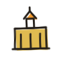

Limestone City Bitcoin is a community-focused group in Kingston, Ontario, dedicated to Bitcoin education and adoption. We believe in the power of decentralized sound money and aim to provide a space for locals to learn, share, and grow together.
Bitcoin is more than something to stack and hold. Owning it is the easy part. The real work is building: the meetups, the local merchants, the mentors, and the culture that turn a protocol into a community. We believe it falls to the people who see it early to step up: to lead, to build, and to bring others in. Kingston's Bitcoin future won't build itself.
Whether you are a seasoned developer, a business owner, or someone just hearing about Bitcoin for the first time, there is a place for you here, and a way to contribute. Our goal is to make technical and economic sovereignty accessible to everyone in YGK, and to help you go from curious, to confident, to building.